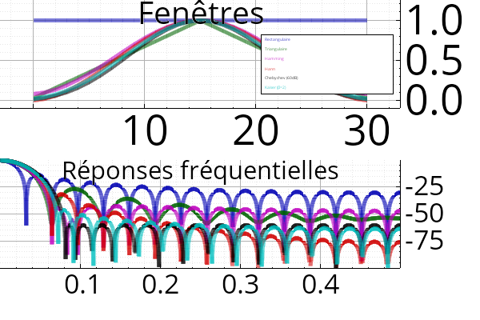

Windows
#include "dsp/filter.hpp"
Symetrical windows are provided for FIR design, and periodic ones for spectral analysis.
Below are some window examples (all with 31 coefficients), and their frequency responses:

Types
using dsp::filter::Window = typedef tsdf::Fenetre
using dsp::filter::AnalyseFiltre = typedef tsdf::AnalyseFiltre
Structures
struct Design
Generic structure holding a filter description (coefficients vector for a FIR filter, or rationnal function for a IIR filter).
Functions
Vecf window(Window type, int n, bool symetrical=true)
Vecf window(cstring type, int n, bool symetrical=true)
Parameterless window creation (rectangular, Hann, Hamming, triangular or Blackman)
Vecf window_chebychev(int n, float atten_db, bool symetrical=true)
Chebychev window creation.
static Vecf window_slepian(int N, float B)
Slepian window creation.
static AnalyseFiltre window_analysis(cstring nom, const Vecf &x)
tuple<float, int> kaiser_param(float atten_db, float df)
Computation of the parameters of a Kaiser filter.
Vecf window_kaiser(float atten_db, float df, bool symetrical=true)
Creation of a Kaiser window.
Vecf window_kaiser1(int n, float β, bool symetrical=true)
Creation of a Kaiser window (from the shape parameter \(\beta\)).